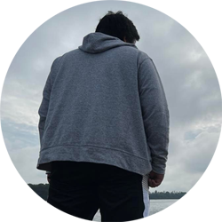

My name is Sean Aldrich E. Arceo.
I am a student of Asia Pacific College, currently taking a major in Cyber Security and Forensics.
This page was made to showcase the usage of GitHub repositories and knowledge in HTML and CSS coding of individual students.
Feel free to naviagate the web page in its entirety through the links above.
My name is Sean Aldrich E. Arceo.
I am currently 21 years old.
I have been studying in APC for 2 years in the section of SF211.
I still have a long way to go in becoming a better programmer and a better person.
I like saying"bababooey"a lot.
My favorite hobby of all time is making music.
I've been deeply inspired by Porter Robinson and Snail's House to making music since High School.
Even the background to this website is using an image from ther/porterrobinson subredditmade by the user u/Rushyan.
I also like to play video games and various outdoor sports.
I also dabble in a bit of drawing but I've unfortunately forgone that hobby years ago.
To keep it plain and simple...
My current goal is to simply graduate from College.
These are the current works that I've managed to keep regarding my music background.
- Porter Robinson:Sad Machine (Live)[Remake]
- Nanashi Mumei Ch. :Dan Dan Don Don[Edited]
The links are for the originals that I've based my work around.
My works are files that you can request for.